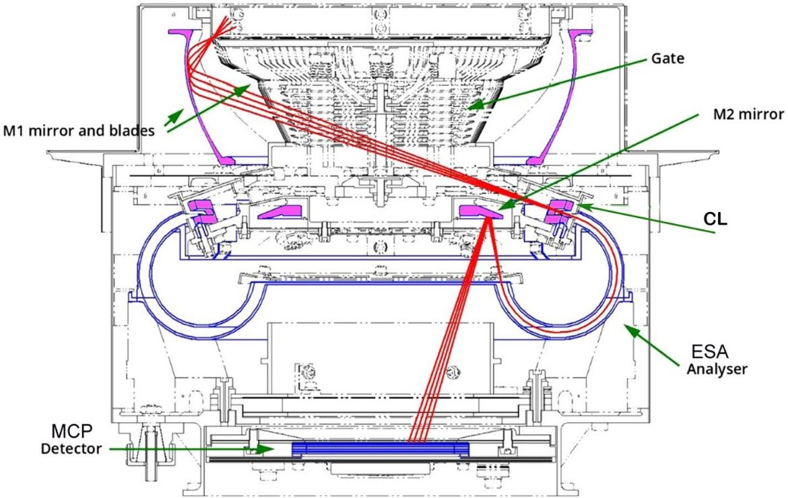
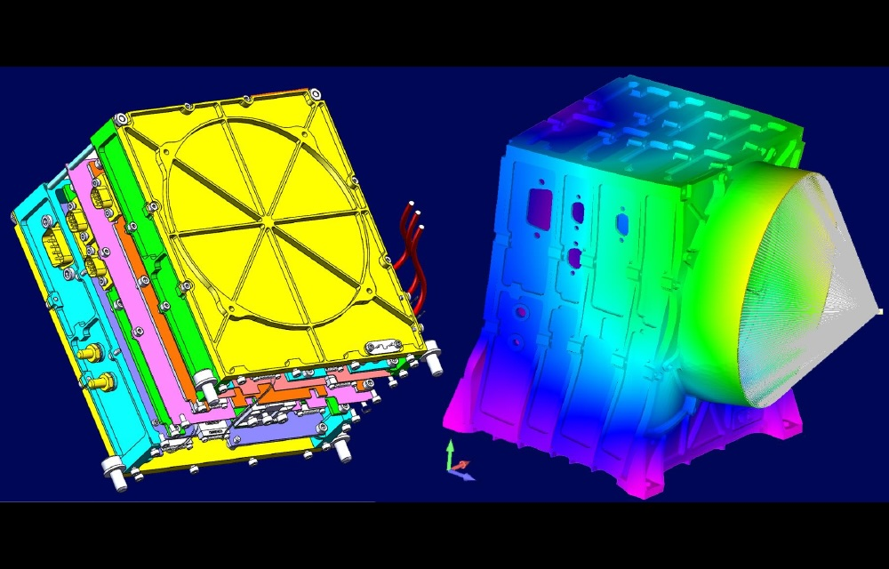
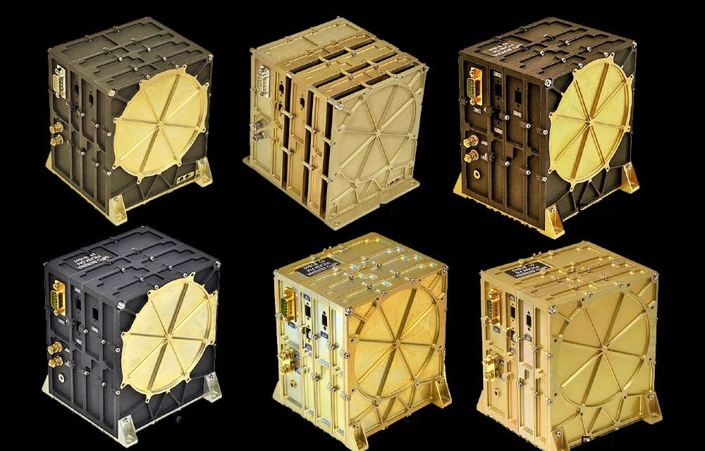
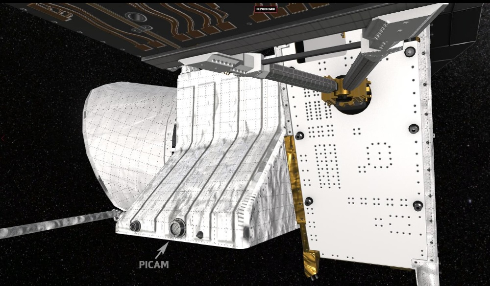

The mission
BepiColombo is the joint ESA–JAXA mission to Mercury and Europe's first. It launched from Kourou on an Ariane 5 on 20 October 2018 as a composite spacecraft: ESA's Mercury Transfer Module supplying cruise power and propulsion, ESA's Mercury Planetary Orbiter carrying eleven instruments for mapping, geodesy, composition and local-environment measurements, and JAXA's Mercury Magnetospheric Orbiter, Mio, dedicated to fields, plasma, particles and dust. MPO and Mio will eventually work in different polar orbits, measuring the planet and its plasma system at the same time.
Reaching Mercury means losing heliocentric orbital energy, not gaining it — so the cruise took eight years, solar-electric propulsion and nine gravity assists: one at Earth, two at Venus and six at Mercury. The last Mercury flyby was on 8 January 2025, the final thrust arc ended on 15 June 2026, and the transfer module was released on 3 September 2026. Orbit insertion follows on 21 November 2026, Mio separates on 9–10 December, MPO reaches its final orbit on 10 March 2027 and the science phase opens on 6 April 2027.
Mercury earns that effort. It is the smallest planet, carries an unusually large metallic core, turns in a 3:2 spin–orbit resonance and moves on an eccentric orbit between roughly 0.31 and 0.47 AU. Its surface runs from about 100 K on the night side to about 700 K at the hottest, under a solar flux near perihelion of about 14 kW/m². It is simultaneously a record of how the inner Solar System formed and one of the most punishing destinations an instrument designer can be given.
The mission treats Mercury as a coupled system: deep interior, surface mineralogy, tenuous exosphere, intrinsic magnetic field and compact magnetosphere, all driven continuously by solar radiation, the solar wind, micrometeoroid impacts and precipitating energetic particles. Material knocked off the surface becomes neutral or ionised, joins the exosphere and magnetosphere, and sometimes escapes. Measuring the composition, energy and direction of those ions is the direct route from a surface process to the Sun–Mercury interaction that caused it.
The instrument we work on
On MPO that investigation belongs to SERENA — Search for Exospheric Refilling and Emitted Natural Abundances — a suite of four sensors: ELENA for energetic neutral atoms, STROFIO for neutral-particle mass spectrometry, MIPA for ion precipitation, and PICAM, the Planetary Ion CAMera, for three-dimensional ion distributions and mass analysis. PICAM is where our hardware is.
PICAM is an all-sky charged-particle camera and ion mass spectrometer for the three-dimensional velocity distribution and mass spectrum of positive ions. It masses about 2.45 kg in an envelope of roughly 20 × 24 × 19 cm, and its instantaneous field of view is close to a full hemisphere — 2π steradians — which is how it achieves broad angular coverage without a mechanical scanner.
| Energy range | Several eV to about 3 keV, up to 32 scan steps |
|---|---|
| Mass range | Up to about 132 amu, corresponding to xenon |
| Mass resolving power | Better than about 50 — enough to separate sodium from magnesium ions in suitable modes |
| Angular sampling | Up to 60 angular pixels |
| Detector | Microchannel plate, position-sensitive |
| Mass · envelope | 2.45 kg · about 20 × 24 × 19 cm |
Ions enter through an annular aperture. Electrostatic mirrors and shaped electrodes steer particles arriving from different directions through the optical system, an electrostatic analyser selects them by energy per charge, and a gated time-of-flight section modulates the beam before it reaches the microchannel-plate detector. The detector position preserves the arrival direction; the flight time between gate and detector signal gives the mass. PICAM therefore records not just that an ion arrived, but where from, how energetic it was, and — within its resolution — which species it most likely was.
Every one of those measurements is a geometry measurement. The ion optics only mean what they are calibrated to mean if the electrodes, analyser and detector stay where they were put.

Our contribution: the PICAM electronics-box structure
We designed, structurally verified, manufactured and delivered the ultra-light mechanical structure and precision parts of PICAM's electronics box, including the mechanically demanding interface that supports the sensor system. This is a defined part of the instrument, not the whole of PICAM and not the SERENA suite: the work was carried out inside an international collaboration led by the Space Research Institute of the Austrian Academy of Sciences (IWF/ÖAW) in Graz, where PICAM was integrated, together with Space Technology Ireland.
The box is not an enclosure. It holds the low- and high-voltage supplies, the coordinate and time-of-flight electronics and the instrument controller that talks to the SERENA System Control Unit — and at the same time it provides stable geometry for that electronics, carries structural loads, and forms the mechanical connection between a relatively heavy sensor assembly and the spacecraft instrument platform.
Our work ran as three connected engineering tasks: three-dimensional mechanical design, strength verification by finite-element analysis, and delivery of manufactured precision parts. The analyses asked how a deliberately low-mass box and its interfaces would answer the vibration and acceleration loads of launch, and the target was sufficient stiffness and load margin without a gram of unnecessary mass — a trade that matters more, not less, when the destination is Mercury.

The design-to-hardware cycle ran six times, across the six electronics-box models recorded in our archive as STM, PM, EM, QM, FM and FS, supporting the structural, development, engineering, qualification and flight stages of the instrument programme in turn. All six box structures were produced in our laboratory at IEP SAS with industrial partners, and the unit identified as the Flight Spare is the one flying on BepiColombo.


People
Ing. Ján Baláž, PhD. — PICAM electronics-box structure: design, finite-element verification and delivery.